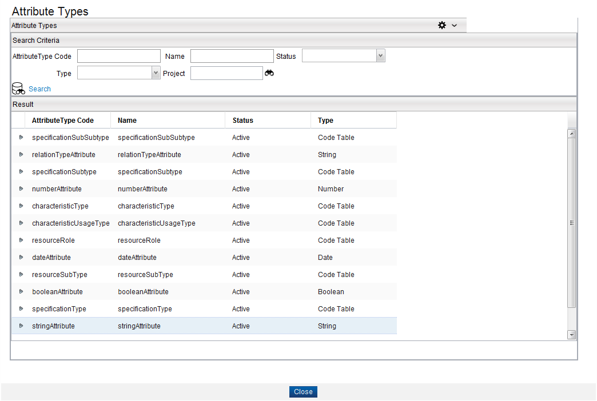
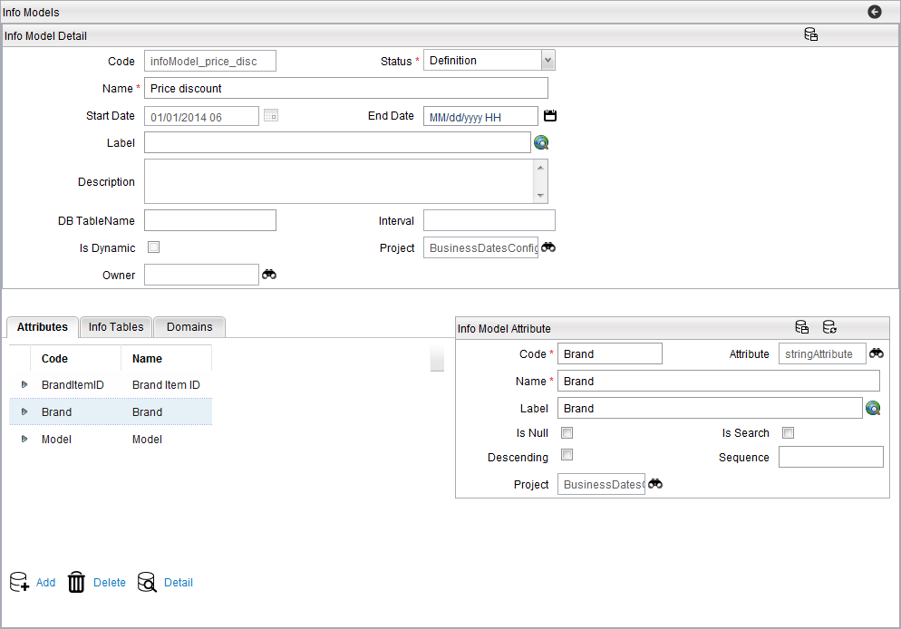

Attributes for an Info Model
To create info tables, first you need to add attributes for the info model. The attributes must be Active (that is, the Status field set to Active).
Add an Attribute
To add attributes to info model, complete these steps:
- From the menu bar, click Designer > Attributes, and create Active attributes of the type String or Number (for example, Brand, Model, and so on).
- From the menu bar, click Designer > Info Models, and create an Info Model.
- Click the Attributes tab from Info Model detail page, and click the Add button.
- The Info Model Attribute dialog appears. Click the Attribute field's Search button.
- The Attribute Finder dialog appears. Click the Search button to display all the attributes.
- Select one attribute by double-clicking the row.
- The information related to selected attribute appears in the fields of Info Model Attribute dialog. The following table describes the fields for Info Model Attribute:
Fields Description Rule Name Unique Name of the Attribute within the Info Table. This field is for internal use when designing your catalog model. This field is not supported by language translation. Mandatory Attribute Use the finder to pick a Catalog Attribute. Mandatory Label The visual Label used for this attribute, which is used in the application user interface. Mandatory Is Null If checked, the Info Model Attribute or Column will allow null value. Otherwise, a null value is not allowed. Boolean Is Search Enables searching of Info Model Attributes. If checked, this column attribute can be used as a search key and the system will create an index for the search key. Boolean Descending This field determines how the data is displayed in the Catalog Management application. Checking this box, displays the column data in descending order. Boolean. Visible when Sort = true Sequence Number value used for attribute sorting. Visible when Sort = true. Up to 4 digits in length Project Search for the name of the project. Mandatory - Click the Save button on Info Model Attribute dialog, the details of added attribute appear under the Attributes tab. You can repeat steps 3 to 7 to add more attributes.
- Once you are done adding the attributes, select Active from the Status field on Info Model Detail dialog.
Note: Do not change the Status to Active at this stage.



Note: You cannot add or delete an attribute once the info model is activated.
Delete an Attribute
To delete an attribute related to info table, complete these steps:
- Click Attributes tab from Info Model Detail page to display list of added attributes.
- Select an attribute from the list and click the Delete button.
- A confirmation dialog appears. Click the Yes button to delete the selected attribute.
View details of an Attribute
To view details of an attribute related to info table, complete these steps:
- Click Attributes tab from Info Model Detail page to display list of added attributes.
- Select an attribute from the list and click the Detail button.
- The selected attribute's details appear in the Info Model Attribute dialog.